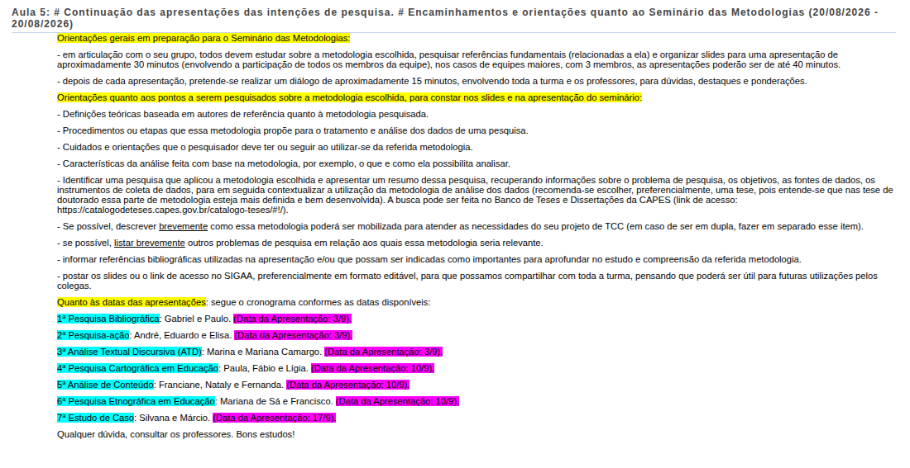

⏱️ Dinâmica e Tempos Regulamentares
30 min
Apresentação Oral (Duplas)
Até 40 min
Apresentação Oral (Trios)
~15 min
Diálogo, Dúvidas & Ponderações
Todos os membros da equipe devem participar ativamente da fala durante a apresentação. Ao final de cada seminário, a turma e os docentes farão destaques e contribuições formativas.
📋 Cronograma de Apresentações e Acervo de Slides
Distribuição das metodologias apresentadas, seminaristas e repositório permanente dos slides em formato PDF (não editável) para consulta dos acadêmicos e turmas futuras (2027.2).
| # | Encontro / Data | Metodologia da Pesquisa | Equipe de Seminaristas | Slides (PDF) |
|---|---|---|---|---|
| 1ª | 03/09 · Aula 07 | 📚 Pesquisa Bibliográfica | Gabriel Beck de Albuquerque e Paulo Henrique Rosa | 📥 Baixar PDF |
| 2ª | 03/09 · Aula 07 | 🔄 Pesquisa-ação | André Barbosa da Silva, Eduardo Kimoto Hosokawa e Elisa Duarte Macedo de Sousa | 📥 Baixar PDF |
| 3ª | 03/09 · Aula 07 | 📝 Análise Textual Discursiva (ATD) | Marina Luíza Borges Costa e Mariana Camargo Oliveira | 📥 Baixar PDF |
| 4ª | 10/09 · Aula 08 | 🗺️ Pesquisa Cartográfica em Educação | Paula Ramos de Mello, Fábio Luiz Zandonai e Lígia Wherli Siqueira | 📥 Baixar PDF |
| 5ª | 10/09 · Aula 08 | 🔍 Análise de Conteúdo | Franciane Prazeres, Nataly Meurer e Fernanda Martins da Silva | 📥 Baixar PDF |
| 6ª | 10/09 · Aula 08 | 🌐 Pesquisa Etnográfica em Educação | Mariana de Sá Rodrigues da Silva e Francisco Souza da Silva Castro | 📥 Baixar PDF |
| 7ª | 17/09 · Aula 09 | 📊 Estudo de Caso | Silvana Rodrigues Seara e Márcio Alexandre Botti | ⏳ Aguardando envio |
| 8ª | 17/09 · Aula 09 | 💬 Análise do Discurso (AD) | Edecio João Porto Júnior | 📥 Baixar PDF |
🗓️ Detalhamento por Dia de Apresentação
🗓️ Dia 1 — Aula 07
03/09/2026 (Quinta-feira)
🗓️ Dia 2 — Aula 08
10/09/2026 (Quinta-feira)
🗓️ Dia 3 — Aula 09 (Encerramento)
17/09/2026 (Quinta-feira)
👥 Silvana e Márcio
17/09
⏳ Aguardando PDF
📌 Pontos Obrigatórios para Pesquisa e Apresentação
Os slides e a explanação oral devem contemplar a seguinte estrutura conceitual:
- 1. Definições Teóricas: Fundamentação conceitual baseada em autores de referência no método pesquisado.
- 2. Procedimentos e Etapas: Passo a passo que a metodologia propõe para tratamento, coleta e análise dos dados.
- 3. Cuidados e Orientações: Recomendações e atenções éticas/metodológicas que o pesquisador deve adotar ao aplicar o método.
- 4. Características da Análise: Potencial analítico da abordagem (o que e como ela possibilita analisar e seus limites).
- 5. Estudo / Tese Exemplo (CAPES): Identificar uma pesquisa que aplicou a metodologia, apresentando resumo, problema, objetivos, instrumentos de coleta e contextualização do método de análise (preferencialmente tese de doutorado no Banco de Teses da CAPES ↗).
- 6. Aplicação no TCC: Descrição breve de como o método pode ser mobilizado no projeto de TCC dos membros da equipe (em duplas/trios, abordar individualmente).
- 7. Problemas Correlatos: Listar brevemente outras situações ou questões educacionais/ambientais onde o método é relevante.
- 8. Referências Bibliográficas: Lista de obras citadas e referências recomendadas para aprofundamento.
- 9. Postagem no SIGAA: Inserir os slides ou link de acesso no SIGAA (preferencialmente editável) para compartilhamento com a turma.
📷 Registro do Planejamento dos Seminários

Registro oficial das orientações gerais e distribuição de temas e seminaristas (Aulas 07 a 09). Clique para abrir em tamanho real.